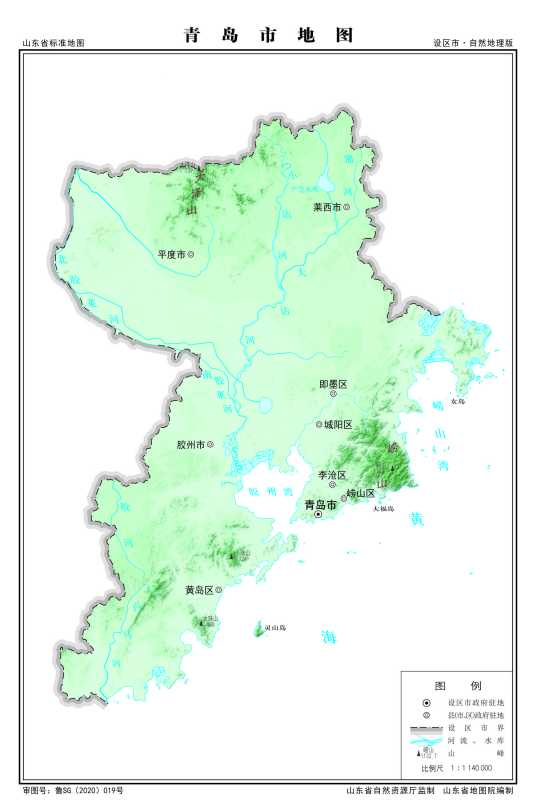

青岛 （山东省辖地级市）
青岛，别称岛城、琴岛、胶澳，山东省辖地级市、副省级市、计划单列市、特大城市， 国务院批复确定的中国沿海重要中心城市和滨海度假旅游城市、国际性港口城市 。截至2019年，全市下辖7个区、代管3个县级市，建成区面积758.16平方千米。区域总面积11293平方千米 [23] 。根据第七次人口普查数据，截至2020年11月1日零时，青岛市常住人口为10071722人。 2021年，全市实现地区生产总值14136.46亿元。
青岛地处中国华东地区、山东半岛东南、东濒黄海，位于东经119°30′—121°00′、北纬35°35′—37°09′之间。是山东省经济中心、国家重要的现代海洋产业发展先行区、东北亚国际航运枢纽、海上体育运动基地 ， 一带一路新亚欧大陆桥经济走廊主要节点城市和海上合作战略支点。
青岛是国家历史文化名城、中国道教发祥地。因树木繁多，四季常青而得名。1891年清政府驻兵建制， 青岛是2008北京奥运会和第13届残奥会帆船比赛举办城市，是中国帆船之都， 亚洲最佳航海城， 世界啤酒之城、联合国“电影之都”、全国首批沿海开放城市、全国文明城市、中国最具幸福感城市。被誉为“东方瑞士” 、中国品牌之都。2020年9月2日，被交通运输部评为国家公交都市建设示范城市。
青岛是国际海洋科研教育中心，驻有山东大学（青岛）、北京航空航天大学青岛校区、 中国海洋大学等高校26所，引入清华大学、北京大学等29所高校。青岛的异域建筑种类繁多，被称作“万国建筑博览会”。八大关建筑群荣膺“中国最美城区”称号